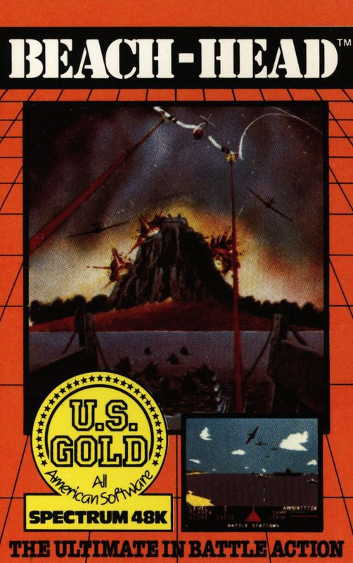
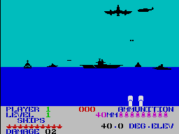

Beach-Head


{kind=link}

| Publisher: | U.S. Gold |
| Price: | £7.95 |
| Year: | 1984 |
| Source: | CRASH, Issue 10 |
Beach-Head arrived in Britain from America with plenty of pre-publicity as one of those new generation US games that had to be seen. U.S. Gold are now busy bringing all sorts of famous games under licence like Zaxxon (already available for the C8M64 and hopefully soon for the Spectrum). The graphics of Beach-Head on the CBM64 were very good and many people wondered how good they could still be on the Spectrum. The result detailed inlay.

Beach-Head is a six stage game based loosely on American experiences in some Pacific war, the Second World War judging by the aircraft type. Stage one is the map Screen where you must move your cursor to the area you wish to attack, If you opt for the hidden passage you risk losing ships (lives) in sailing them through the mine infested and torpedo-ridden narrows. On the other hand your entry into the inner bay protected by the enemy's fleet goes unnoticed. so they have less time to scramble fighters and bombers against your forces. The second screen is seen from the deck of your landing craft with anti-aircraft guns at the base and the enemy carriers beyond. Bombers cross from left to right while fighter bombers attack you. Too many direct hits and you'll lose a life. Following this is a screen where you must attempt to sink the enemy shipping - a carrier crosses your field of fire, while other ships fire back at you. Completing this takes you to the beach-head itself, where you control tanks as they advance up the dunes, avoiding enemy obstacles, the final battle is the breaching of the giant gun. Here again you are in control of artillery and the object is to shoot out several white blocks in the tower's base before the giant turret can swing round and blast you out of existence.
Scoring is a fairly complex business, well explained in the detailed inlay.
CRITICISM
'Do you suffer from those disgustingly horrible people so crudely cast as Commodore 64 owners saying how superior their machine is, saying that your beloved Spectrum isn't capable of producing excellent programs like Beach-Head? You do! Now all you have to do Is turn around and beat the asterisks out of them, and while doing this you can tell them that your Spectrum has a version of Beach-Head that is every bit as good as the 64 version if not better. The graphics are excellent and are just as pleasing to the eye as the 64 version. The sound - well that is one area where the Spectrum falls down slightly, but even so, it's not bad. The menu options are excellent, catering for just about every joystick plus definable keys too. The game is very playable and certainly addictive. This will keep you happy for a long while. All in all an excellent program well worth the £7.95 and a sure winner. Can't wait for more US Gold games.'
'This game has a fair mix of different game types in different stages. It's also got an element of strategy. Beach Head is a good battle/war game with some decent graphics (especially the planes). Good is the word for most out, but it does not really come into the realm of very good. and at almost £8 the V.F.M. is also knocked a bit.'
'Spectrum graphics have certainly come a long way since the venerable DK' Tronics game 3D Tanx - and that wasn't bad. The effect of trajectory here is very strong and realistic. This is another translation from a 64 version although this version is far more difficult than its parent, possibly because US Gold well know that Spectrum garners play a much meaner game than their 64 counterparts. The oddity of this game, though, is the mix of such excellent graphics (like on the General Quarters and Battle Stations screens) with relatively primitive looking ones (like in Hidden Passage and Beach Head). The explosions are a bit disappointing, just short red puffs - a bit unspectacular. Couldn't they at least have had a few bits falling off, or used alternate colours? Overall, rather mixed feelings. The game is fun to play and quite addictive, but coming from the States, perhaps a bit over priced.'
COMMENTS
| Control keys: | User-definable, for directions and fire needed |
| Joystick: | Almost any via UDK |
| Keyboard play: | Any position to suit, very responsive |
| Use of colour: | Very good |
| Graphics: | Good, varied, fairly large and detailed in most cases with good 3D in battle scenes |
| Sound: | Good |
| Skill levels: | 3 |
| Lives: | Six ships |
| Screens: | 6 stages |
| General rating: | Good, reasonably addictive, plenty of playability, perhaps over-priced |
| Use of computer: | 86% |
| Graphics: | 80% |
| Playability: | 79% |
| Getting started: | 76% |
| Addictive qualities: | 77% |
| Value for money: | 75% |
| Overall: | 79% |